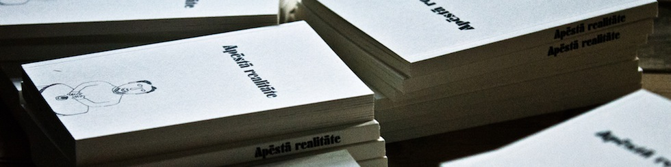
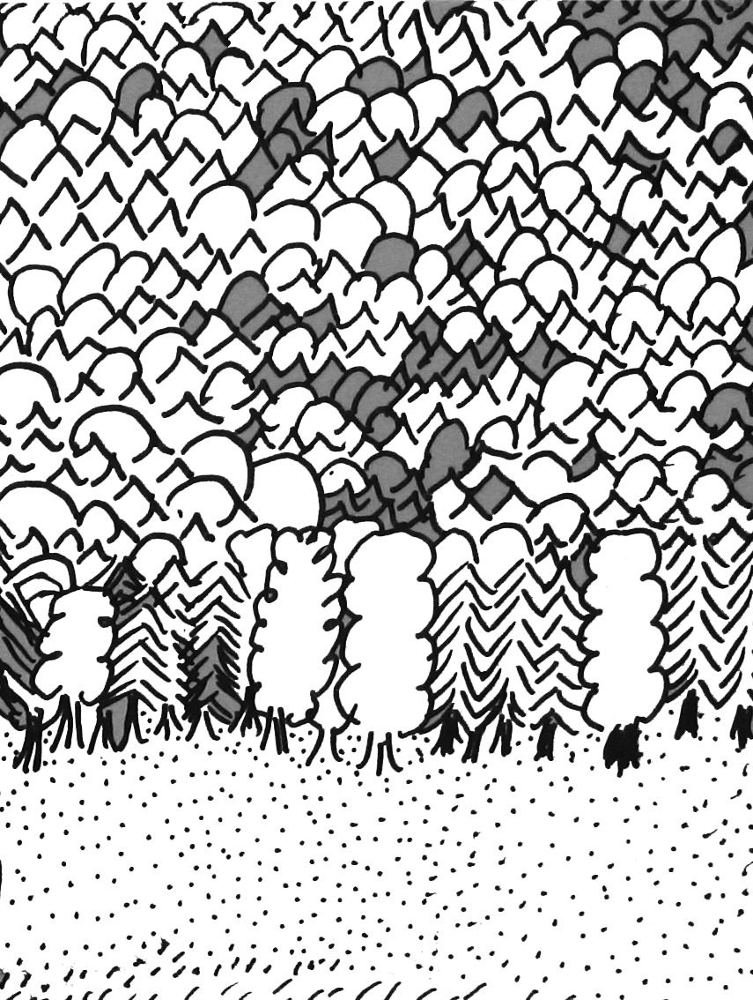
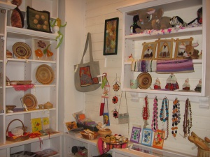

Biedrības Gaismas stars sniegtie pakalpojumi
Dienas aprūpes centrs
 Dienas aprūpes centrs klientiem piedāvā plašu pakalpojumu klāstu ar mērķi sniegt psihosociālu atbalstu, attīstīt patstāvīgai dzīvei nepieciešamās prasmes un iemaņas, veicināt nodarbinātību un apmācību, vecināt pozitīvas saskarsmes veidošanos, celt klientu izpratni un zināšanu līmeni par garīgās veselības un veselīga dzīvesveida jautājumiem, veicināt klientu interesi un iniciatīvu iesastīties sabiedriskās aktivitātēs, nodrošināt klientiem iespēju saturīgi pavadīt brīvo laiku, uzlabot kopējo dzīves kvalitāti.
Dienas aprūpes centrs klientiem piedāvā plašu pakalpojumu klāstu ar mērķi sniegt psihosociālu atbalstu, attīstīt patstāvīgai dzīvei nepieciešamās prasmes un iemaņas, veicināt nodarbinātību un apmācību, vecināt pozitīvas saskarsmes veidošanos, celt klientu izpratni un zināšanu līmeni par garīgās veselības un veselīga dzīvesveida jautājumiem, veicināt klientu interesi un iniciatīvu iesastīties sabiedriskās aktivitātēs, nodrošināt klientiem iespēju saturīgi pavadīt brīvo laiku, uzlabot kopējo dzīves kvalitāti.
Tuvinieku atbalsta grupa
Programmas mērķis ir tuviniekiem sniegt informāciju un zināšanas par garīgās veselības jautājumiem, šizofrēniju un citām psihiskām saslimšanām. Sniegt informāciju un padomus kā rīkoties krīzes situācijās, izskaidrot ārstēšanās procesu, psihiatra darbu, ģimenes iesaistīšanos un paša slimnieka iesaistīšanos. Iespēju robežās mazināt kauna un vainas sajūtu, sniegt emocionālu atbalstu. Sniegt iespēju satikties ar ģimenēm ar līdzīgām problēmām, dalīties personīgajā pieredzē.
Lasīt vairāk
Vasaras nometnes
.JPG) Katru vasaru biedrības biedriem tiek organizēta vasaras nometne. Vasaras nometnes tiek veltītas dažādiem tematiem, veselīgam dzīvesveidam, dabas produktiem un tradīcijām, tējām, radošajām aktivitātēm. Nometnes mērķi ir ne tikai apgūt izvēlēto nometnes tematu, bet arī izmantot iespēju izrauties ārpus ikdienas, atpūsties no ierastās rutīnas vai stresa, kā arī labāk iepazīt sevi.
Katru vasaru biedrības biedriem tiek organizēta vasaras nometne. Vasaras nometnes tiek veltītas dažādiem tematiem, veselīgam dzīvesveidam, dabas produktiem un tradīcijām, tējām, radošajām aktivitātēm. Nometnes mērķi ir ne tikai apgūt izvēlēto nometnes tematu, bet arī izmantot iespēju izrauties ārpus ikdienas, atpūsties no ierastās rutīnas vai stresa, kā arī labāk iepazīt sevi.
Tirdzniecības vieta "Saulgrieze"
Kopš 2011 gada marta Biedrība Gaismas stars sadarbojoties ar Latvijas Sieviešu invalīdu asociācija „Aspazija” piedāvā biedrības biedriem iespēju realizēt sevis darinātos daiļamatu priekšmetus. Salonā „Saulgrieze”
Salons „Saulgrieze” atrodads Rīgas centrāltirgū renovētajā Sakņu paviljonā blakus izejai uz tirgus laukuma pusi. Salona darba laiks katru dienu no 10:00-18:00.
Salons „Saulgrieze” atrodads Rīgas centrāltirgū renovētajā Sakņu paviljonā blakus izejai uz tirgus laukuma pusi. Salona darba laiks katru dienu no 10:00-18:00.
Lasīt vairāk